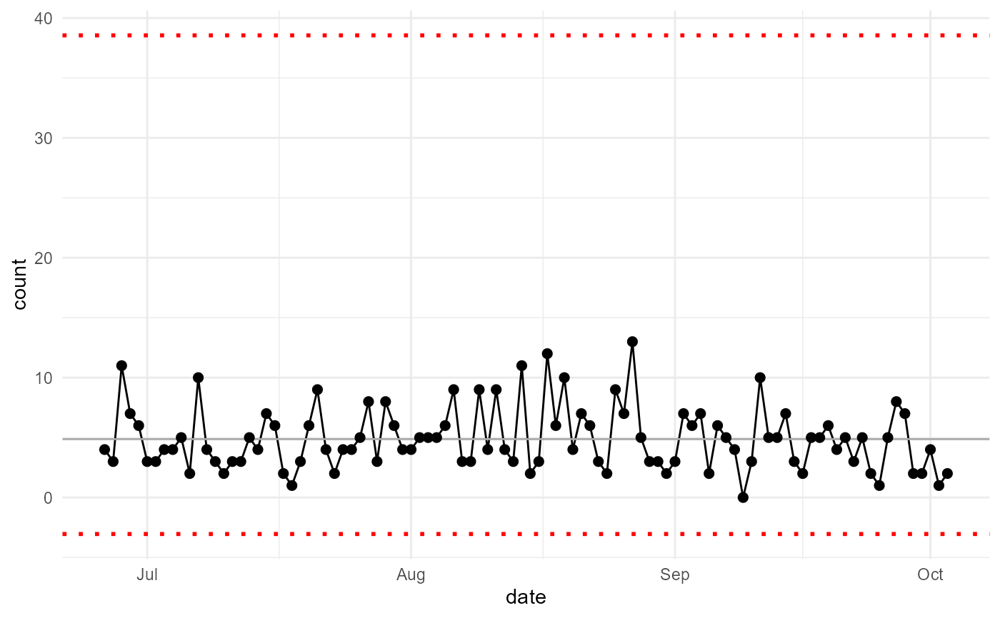
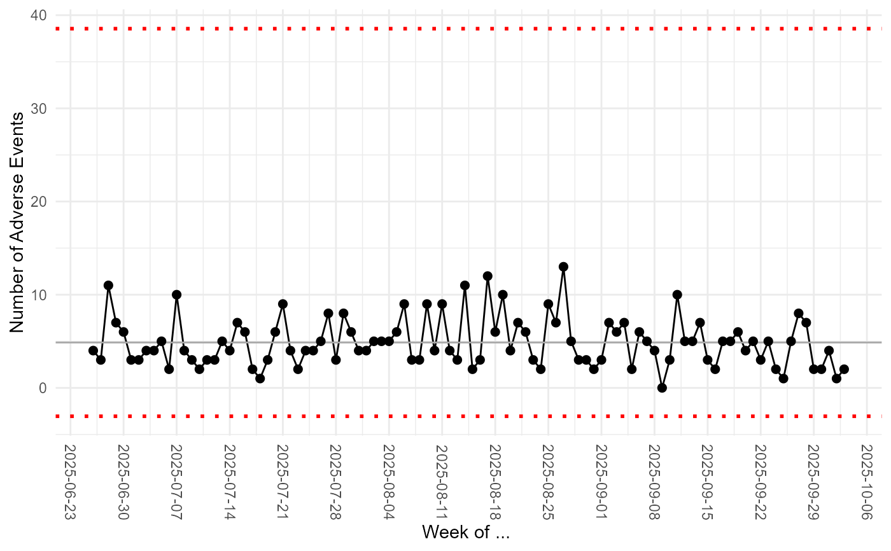
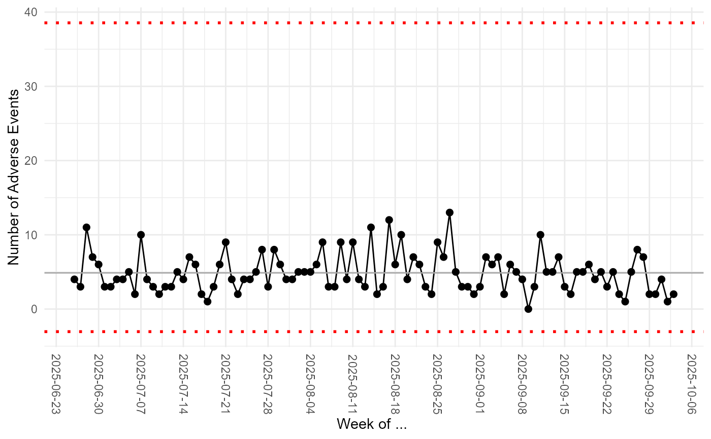

Create a control chart, aka Shewhart chart: https://en.wikipedia.org/wiki/Control_chart.
hai_control_chart(
.data,
.value_col,
.x_col,
.center_line = mean,
.std_dev = 3,
.plt_title = NULL,
.plt_catpion = NULL,
.plt_font_size = 11,
.print_plot = TRUE
)Arguments
- .data
data frame or a path to a csv file that will be read in
- .value_col
variable of interest mapped to y-axis (quoted, ie as a string)
- .x_col
variable to go on the x-axis, often a time variable. If unspecified row indices will be used (quoted)
- .center_line
Function used to calculate central tendency. Defaults to mean
- .std_dev
Number of standard deviations above and below the central tendency to call a point influenced by "special cause variation." Defaults to 3
- .plt_title
Plot title
- .plt_catpion
Plot caption
- .plt_font_size
Font size; text elements will be scaled to this
- .print_plot
Print the plot? Default = TRUE. Set to FALSE if you want to assign the plot to a variable for further modification, as in the last example.
Value
Generally called for the side effect of printing the control chart. Invisibly, returns a ggplot object for further customization.
Details
Control charts, also known as Shewhart charts (after Walter A. Shewhart) or process-behavior charts, are a statistical process control tool used to determine if a manufacturing or business process is in a state of control. It is more appropriate to say that the control charts are the graphical device for Statistical Process Monitoring (SPM). Traditional control charts are mostly designed to monitor process parameters when underlying form of the process distributions are known. However, more advanced techniques are available in the 21st century where incoming data streaming can-be monitored even without any knowledge of the underlying process distributions. Distribution-free control charts are becoming increasingly popular.
Examples
data_tbl <- tibble::tibble(
day = sample(c("Monday", "Tuesday", "Wednesday", "Thursday", "Friday"),
100, TRUE),
person = sample(c("Tom", "Jane", "Alex"), 100, TRUE),
count = rbinom(100, 20, ifelse(day == "Friday", .5, .2)),
date = Sys.Date() - sample.int(100))
hai_control_chart(.data = data_tbl, .value_col = count, .x_col = date)
#> Registered S3 method overwritten by 'quantmod':
#> method from
#> as.zoo.data.frame zoo

# In addition to printing or writing the plot to file, hai_control_chart
# returns the plot as a ggplot2 object, which you can then further customize
library(ggplot2)
my_chart <- hai_control_chart(data_tbl, count, date)
 my_chart +
ylab("Number of Adverse Events") +
scale_x_date(name = "Week of ... ", date_breaks = "week") +
theme(axis.text.x = element_text(angle = -90, vjust = 0.5, hjust=1))

my_chart +
ylab("Number of Adverse Events") +
scale_x_date(name = "Week of ... ", date_breaks = "week") +
theme(axis.text.x = element_text(angle = -90, vjust = 0.5, hjust=1))
